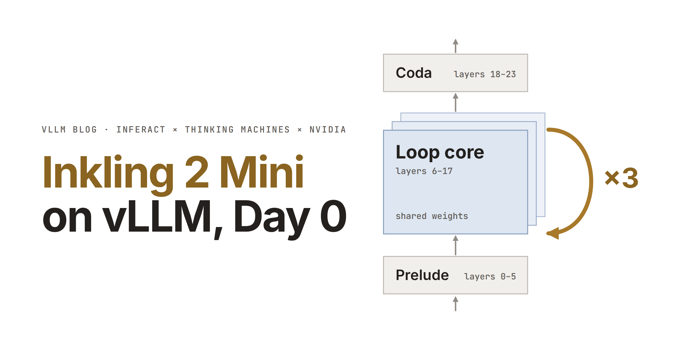
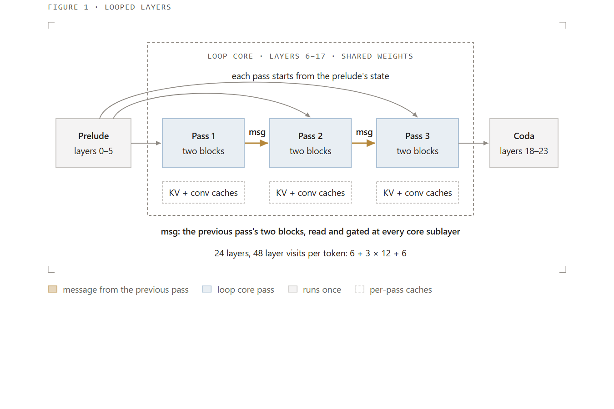

Inkling 2 Mini 登陆 vLLM：循环模型首日支持

Thinking Machines 今天发布了 Inkling 2 Mini。vLLM 从首日开始支持该模型，以及它的可变循环研究 checkpoint TML-d24-varloop-research，运行平台包括 NVIDIA Blackwell、Hopper 和 DGX Spark。Inkling 2 Mini 是一种循环模型（looped model）：中间 12 层对每个 token 重复运行三次，三次 pass 共享权重，但各自拥有 KV 缓存，并读取前一次 pass 传来的门控消息。它是一种多模态 MoE，总参数量 26B、激活参数量 3.5B，支持最长 100 万 token 的上下文，并带有原生 DSpark 推测器。
概要
- 循环层。 第 6–17 层使用共享权重运行三次 pass。每次 pass 都保留自己的 KV 缓存，并读取上一次 pass 的门控消息。
- 总参数 26B、激活参数 3.5B、100 万上下文、原生 DSpark。 这是使用 Inkling 2 Small 组件构建的多模态 MoE；专家在前 20 层使用 NVFP4，在最后 4 层使用 MXFP8，并配有原生 DSpark 推测器。
- 面向 Blackwell、Hopper 和 DGX Spark 的首日优化支持。 vLLM 像管理普通缓存层一样管理每次 pass 的缓存，融合消息读取与控制器，并复用 Inkling 2 Small 的融合内核。
- 强化学习支持。 vLLM 可通过 SkyRL 为强化学习服务 Inkling 2 Mini。
- 可变循环研究 checkpoint。 vLLM 还支持 TML-d24-varloop-research；启动时可以选择 pass 数量，以及多次 pass 是否共享一个 KV 缓存。
我们提供了支持 Inkling 2 Mini 的 Docker 镜像 vllm/vllm-openai:inkling-2-mini。可用以下命令服务该模型：
docker run --gpus all --ipc=host -p 8000:8000 \
-v ~/.cache/huggingface:/root/.cache/huggingface \
vllm/vllm-openai:inkling-2-mini thinkingmachines/Inkling-2-Mini \
--reasoning-parser inkling --tool-call-parser inkling --enable-auto-tool-choice \
--speculative-config '{"method":"dspark","num_speculative_tokens":7,"draft_sample_method":"probabilistic"}'
以下命令服务可变循环研究 checkpoint，并使用 2 次 pass，让它们共享一个 KV 缓存：
docker run --gpus all --ipc=host -p 8000:8000 \
-v ~/.cache/huggingface:/root/.cache/huggingface \
vllm/vllm-openai:inkling-2-mini thinkingmachines/TML-d24-varloop-research \
--reasoning-parser inkling --tool-call-parser inkling --enable-auto-tool-choice \
--hf-overrides '{"text_config": {"loop_num_passes": 2, "loop_share_cache": true}}'
循环结构

图 1：前奏层和尾声层各运行一次；循环核心运行三次 pass，每次都会读取上一次 pass 的消息。
前奏、核心、尾声。 24 个层被分为前奏（第 0–5 层）、循环核心（第 6–17 层）和尾声（第 18–23 层）。前奏和尾声各运行一次；核心使用共享权重运行三次 pass，尾声从最后一次 pass 继续执行。每组六层构成 Inkling 2 Small 所使用的一个分块注意力残差（block attention residual），因此循环核心的一次 pass 恰好产生两个 block。
每次 pass 都从前奏的输出开始。 普通循环模型会把第 p 次 pass 的输出送入第 p + 1 次 pass。这里，三次 pass 都从同一份前奏输出开始，第 p + 1 次 pass 只通过消息看到第 p 次 pass。
每个子层都会读取消息。 从第二次 pass 开始，核心中每个子层的输入——注意力的 query、key、value 输入以及 MLP 输入——都会获得一条自己的消息。消息由注意力残差读取机制从上一次 pass 的两个 block 中读取，并针对每一层和每一种输入类型使用一个学习得到的 query。随后，一个 rank-64 控制器按通道将消息合并到输入中：
h = W_down · [rms(input), rms(message)]
out = (1 − tanh(W_forget · h)) · input + tanh(W_gain · h) · message
循环核心有 12 层，每层有 4 种输入，因此后续每次 pass 对每个 token 都会读取 48 条消息。query、key 和 value 输入会收到不同消息，所以滑动窗口层在第一次 pass 中可以由同一输入投影三者，而在后续 pass 中必须接收三份独立输入。
每次 pass 都保留自己的记忆。 核心中的每一层、每一次 pass 都有各自的 KV 缓存和卷积状态缓存，因此第 p 次 pass 会关注由第 p 次 pass 为先前 token 计算的 key 和 value。模型虽然只有 24 层，却拥有 48 个 KV 缓存和 48 个卷积状态缓存。
从循环内部生成 DSpark 草稿。 三层 DSpark 草稿模型会在目标模型的四次层访问中读取隐藏状态：前奏中一次，第二次和第三次 pass 各一次，以及最终输出一次。
各层本身沿用 Inkling 2 Small。 每层都在隐藏维度 2,304 下使用 Inkling 2 Small 的组件：分块注意力残差；带 gate 与 sink 的相对偏置注意力（20 个滑动窗口层和 4 个全注意力层，24 个 query head 和 8 个 KV head）；短卷积；以及 128 个路由专家（top-8）。第 0–19 层的专家使用 NVFP4，第 20–23 层使用 MXFP8。图像则由一个配置与 Inkling 2 Small 相同的 23 层 ViT 编码器处理。
在 vLLM 中服务循环结构
把每次 pass 的缓存注册为普通缓存层。 vLLM 会把核心层的每个额外 pass 注册为独立注意力层，并为其配置独立的 KV 缓存和卷积状态缓存。KV 缓存管理器和前缀缓存会像对待其他缓存一样处理它们，因此服务循环结构不需要新增缓存管理逻辑。
融合消息读取和控制器。 直接实现时，后续 pass 的每个核心层都要启动 4 次消息读取和 4 个控制器，每项又涉及若干内核。vLLM 使用一个注意力残差内核读取某一层的全部四条消息，并把四个控制器的权重堆叠起来，让它们的 down 投影与 gain/forget 投影以批量 GEMM 运行。一个 Triton 内核负责控制器的 RMS 归一化，另一个内核把门控合并与消息所输入子层的 RMSNorm 融合。合并以 FP32 执行，并禁止 FMA contraction，从而与参考实现保持一致。
围绕每个子层使用融合内核。 对 Inkling 2 Small，vLLM 会把每个子层的 all-reduce、短卷积、残差更新、注意力残差混合和 RMSNorm 融合成一个内核。vLLM 将这些内核从隐藏维度 4,608 泛化到 2,304，并增加一种在 RMSNorm 前返回 FP32 混合结果的模式，使后续 pass 能把消息合并到其中。Inkling 2 Mini 在所有张量并行规模下都会使用这些内核，包括 TP1；在 TP > 1 时，小 batch 还会通过 NVLink multicast 融合 all-reduce。
可变循环研究 checkpoint
Thinking Machines 还发布了 TML-d24-varloop-research。这是一个经过训练、能够使用可变 pass 数量运行的研究 checkpoint。vLLM 通过 --hf-overrides 暴露它的两个选项：
docker run --gpus all --ipc=host -p 8000:8000 \
-v ~/.cache/huggingface:/root/.cache/huggingface \
vllm/vllm-openai:inkling-2-mini thinkingmachines/TML-d24-varloop-research \
--reasoning-parser inkling --tool-call-parser inkling --enable-auto-tool-choice \
--hf-overrides '{"text_config": {"loop_num_passes": 2, "loop_share_cache": true}}'
loop_num_passes设置 pass 数量（至少为 1；默认值是 checkpoint 的 3）。pass 越少速度越快，pass 越多质量越高。DSpark 要求使用默认值，因为草稿模型会读取固定的层访问位置。loop_share_cache让某个核心层的所有 pass 共用一个 KV 缓存：每次 pass 都会覆盖其 token 对应的 key 和 value，因此后续 token 会读取最后一次 pass 的结果。卷积状态仍按 pass 分开保存。
固定循环 checkpoint（例如 Inkling 2 Mini）会拒绝这两个选项。在一张 GB200 上（TP1、4K 上下文、仅测 forward pass），结果如下：
| Pass 数量 | 解码步骤，batch 1 | 解码步骤，batch 32 | KV 缓存容量 |
|---|---|---|---|
| 1 | 1.51 ms | 3.81 ms | 352K token |
| 2 | 2.67 ms | 5.92 ms | 233K token |
| 3 | 3.85 ms | 8.11 ms | 175K token |
| 3，共享 KV 缓存 | 3.86 ms | 8.10 ms | 194K token |
共享 KV 缓存释放的内存少于减少一次 pass，因为每次 pass 的卷积状态缓存仍然保留。
准确性评测
vLLM 保持了参考实现的数值行为：每一步使用相同的数据类型，采用相同的 NVFP4 和 MXFP8 激活量化，并以 FP32 合并消息，只有归约顺序不同。在固定 prompt 上，vLLM 在全部 48 次层访问中的隐藏状态与参考实现之间的差异，大致相当于参考实现自身的 FlashAttention-4 路径与 PyTorch 注意力路径之间的差异；当输入相同时，MoE 输出可以逐位匹配。
端到端测试方面，我们在启用 DSpark 的情况下，使用 inkling-verify 测试了最长 100 万 token 的 needle-in-a-haystack、MMMU-Pro 和 HLE，并测试了 GSM8K。
致谢
感谢 Thinking Machines 和 NVIDIA 团队在将 Inkling 2 Mini 集成并优化到 vLLM 的过程中所进行的紧密合作。